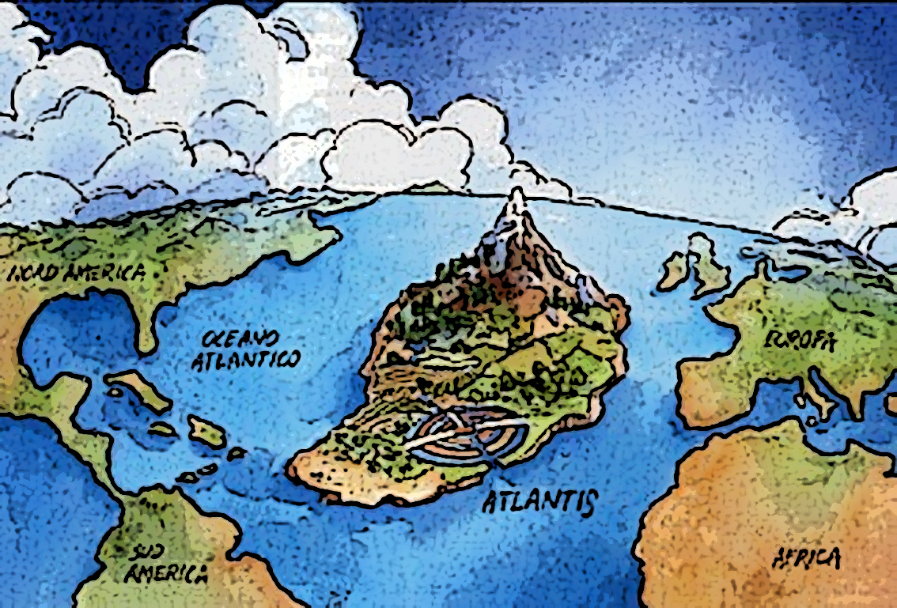
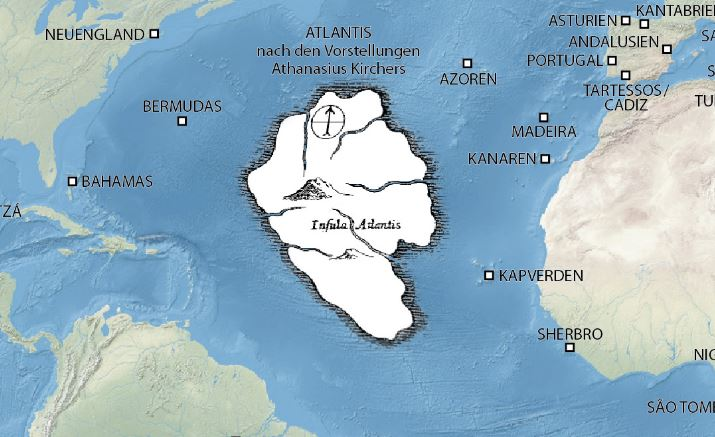

Los textos de Platón señalan la geografía de la Atlántida como escarpada, a excepción de una gran llanura de forma oblonga de 3000 por 2000 estadios, poco menos de 2000 kilómetros cuadrados rodeada de montañas hasta el mar. A mitad de la longitud de la llanura, el relato ubica una montaña baja de todas partes, distante 50 estadios (9 kilómetros) del mar, destacando que fue el hogar de uno de los primeros habitantes de la isla, Evenor, nacido del suelo.
Según el Critias, Evenor tuvo una hija llamada Clito. Cuenta este escrito que Poseidón era el amo y señor de las tierras atlantes, puesto que, cuando los dioses se habían repartido el mundo, la suerte había querido que a Poseidón le correspondiera, entre otros lugares, la Atlántida. He aquí la razón de su gran influencia en esta isla. Este dios se enamoró de Clito y para protegerla, o mantenerla cautiva, creó tres anillos de agua en torno de la montaña que habitaba su amada. La pareja tuvo diez hijos, para los cuales el dios dividió la isla en respectivos diez reinos. Al hijo mayor, Atlas o Atlante, le entregó el reino que comprendía la montaña rodeada de círculos de agua, dándole, además, autoridad sobre sus hermanos. En honor a Atlas, la isla entera fue llamada Atlántida y el mar que la circundaba, Atlántico. Su hermano gemelo se llamaba Gadiro (Eumelo en griego) y gobernaba el extremo de la isla que se extendía desde las Columnas de Hércules hasta la región que por derivación de su nombre se denominaba Gadírica.
Tal prosperidad dio a los atlantes el impulso para construir grandes obras. Edificaron sobre la montaña rodeada de círculos de agua una espléndida acrópolis plena de notables edificios, entre los que destacaban el Palacio Real y el templo de Poseidón. Construyeron un gran canal, de 50 estadios de longitud, para comunicar la costa con el anillo de agua exterior que rodeaba la metrópolis; y otro menor y cubierto, para conectar el anillo exterior con la ciudadela. Cada viaje hacia la ciudad era vigilado desde puertas y torres, y cada anillo estaba rodeado por un muro. Los muros estaban hechos de roca roja, blanca y negra sacada de los fosos, y recubiertos de latón, estaño y oricalco. Finalmente, cavaron, alrededor de la llanura oblonga, una gigantesca fosa a partir de la cual crearon una red de canales rectos que irrigaban todo el territorio de la planicie.
|

Mapa animado de la atlantida. |
 Mapa geografico de la posible ubicacion de la atlantida. |
|---|
 Ir Arriba
Ir Arriba